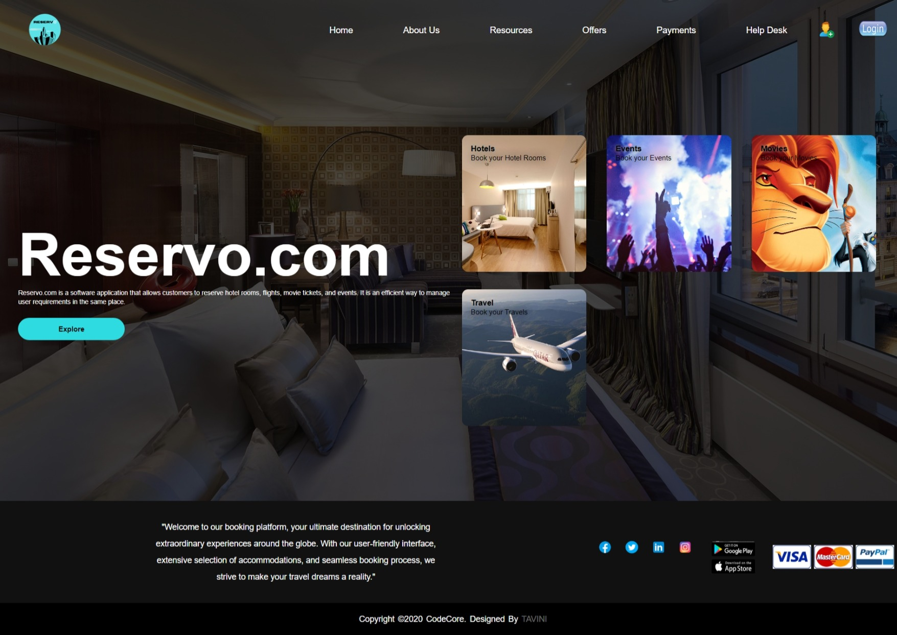
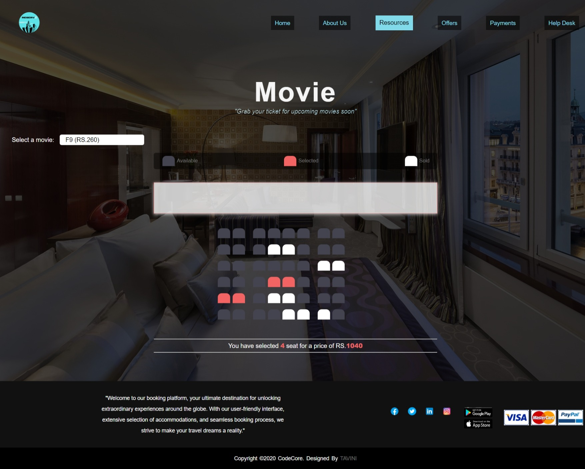
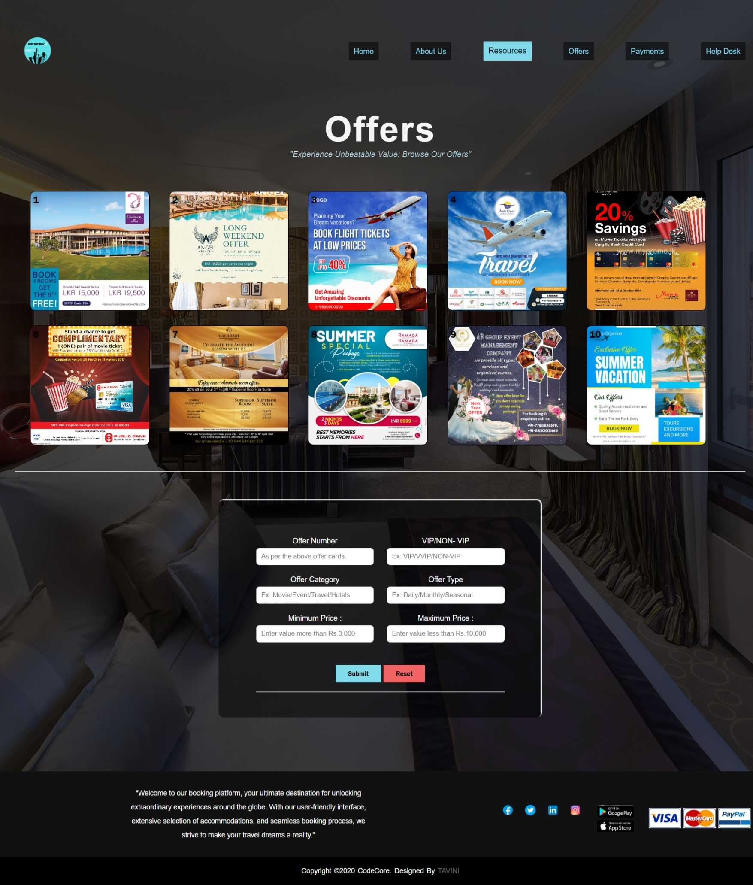
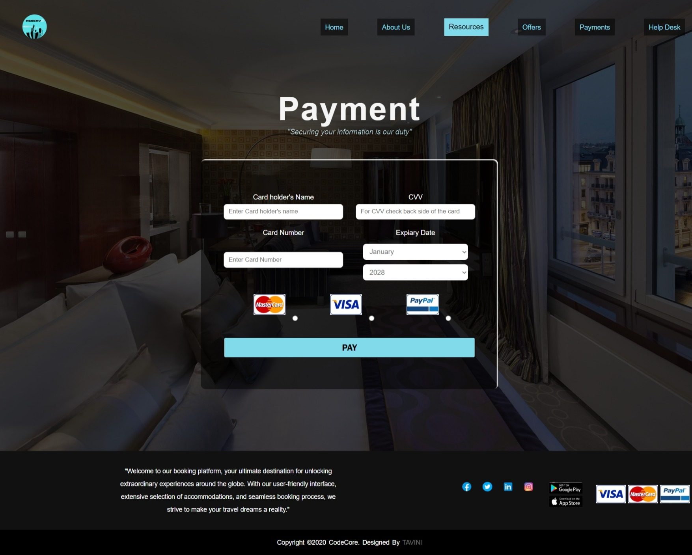
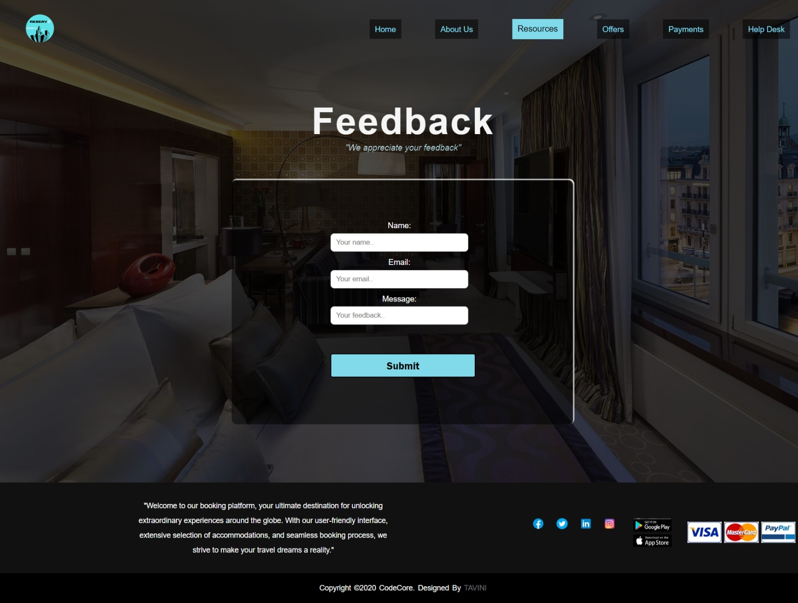

Developed a responsive website for the IWT module using HTML, CSS, and JavaScript to enhance front-end skills. Key features include:
Responsive Design:
Optimized for mobile and desktop views.
Stylish Layout:
Modern CSS styling for a clean interface.
Interactive Elements:
JavaScript for dynamic functionality (e.g., form validation, image sliders).
This project showcases my ability to create user-friendly, interactive web interfaces.
Copyright © Tavini. Made in with html.